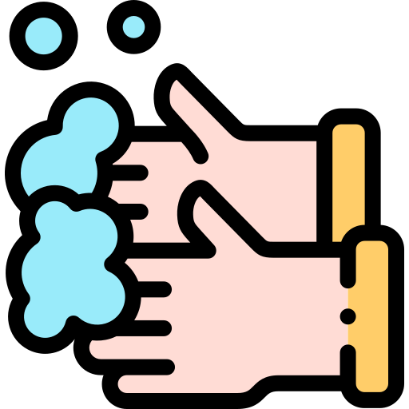

Lávate las manos con agua y jabón después de tocar animales y productos de animales.


Cuando tosas o esturnudas cubre tu boca y nariz con un pañuelo o toalla desechable.

Evita los viajes si tienes fiebre y tienes tos.

Si tienes fiebre, tos y dificultad para respirar busca lo más pronto posible ayuda médica.

Come solo comida bien cocinada

Evita entrar en contacto con animales que esten enfermos.

En público siempre que no se pueda garantizar una distancia de 1,5m lleva adecuadamente mascarilla que cubra boca y nariz.